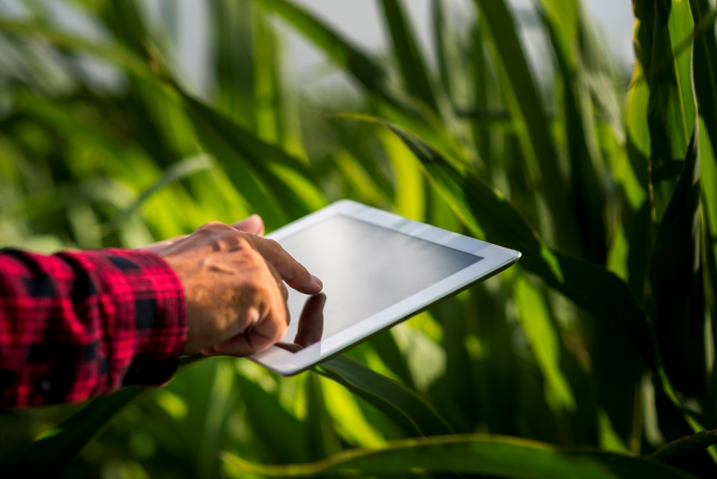

Avanços tecnológicos na agricultura
Nos últimos anos, a agricultura brasileira tem experimentado avanços tecnológicos significativos, que estão ajudando a aumentar a produtividade, eficiência e sustentabilidade do setor. Falaremos um pouco mais sobre esses avanços "aqui".  Imagem de freepik
Os principais responsáveis pelo recente avanço tecnológico
Os avanços tecnológicos na agricultura resultam da colaboração entre diversos agentes, incluindo empresas de tecnologia agrícola como John Deere, Bayer Crop Science e Corteva Agriscience, startups inovadoras como Indigo Agriculture, AeroFarms e Farmers Edge, e instituições de pesquisa como a UC Davis, IRRI e EMBRAPA. Organizações governamentais e ONGs, como a FAO e o USDA, também desempenham um papel crucial, juntamente com agricultores e produtores que adotam e implementam essas inovações. Investidores e fundos de capital de risco, como SoftBank Vision Fund e Temasek Holdings, financiam e incentivam o desenvolvimento de novas tecnologias, impulsionando a sustentabilidade e a eficiência no setor agrícola. Veja mais "aqui". Imagem de rawpixel
Benefícios dos avanços tecnológicos para os jovens
Os avanços tecnológicos na agricultura aumentam a produtividade, reduzem o trabalho manual, promovem a sustentabilidade e abrem oportunidades para o empreendedorismo jovem, melhorando a qualidade de vida e facilitando o acesso a informações e mercados. Essas inovações tornam a agricultura mais atrativa e viável para os jovens. Confira mais "aqui".
Image by freepik